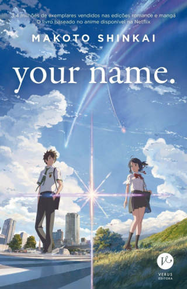
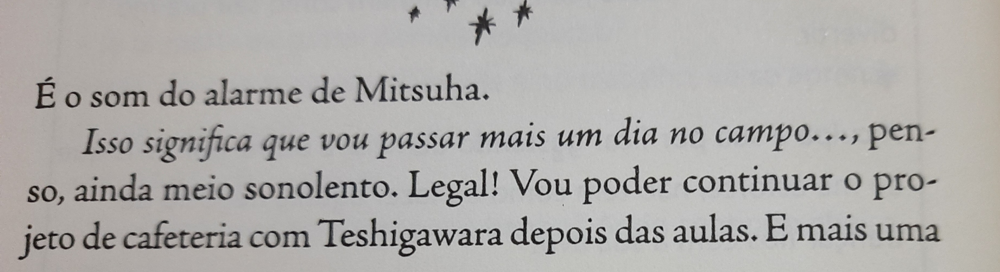
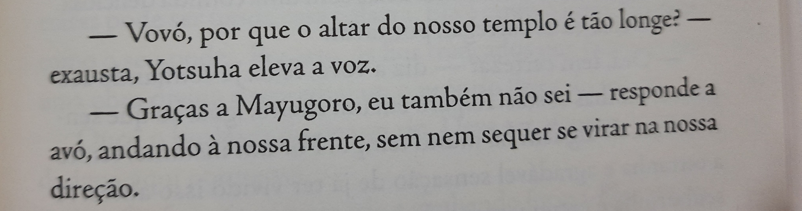

A light novel possui a sua narrativa segui o mesmo rumo, mas com uma diferença crucial o seu ritmo, enquanto o filme e o mangá possui um ritmo constante a novel foca em narra a história pelos fatos sem se importa com ritmo que esta (o livro tem quebra de ritmo que são necessária para explica a troca de corpo e mudança de dia, mas outras que não possuem nexo).
O seu início começa com uma narrativa a frente do tempo em que o livro será focado assim como no filme e diferente do mangá, assim deixando a espera que tanto o filme quanto a novel teriam um mesmo padrão ainda mais se levamos em conta que a diferença entre o lançamento é de aproximadamente dois meses, mas não...
A novel tem um foco muito maior nos pensamentos do Taki e da Mitsuha por ser um livro já de se espera esse foco, mas que seria tão diferente das outras versões muitos pensamentos não são representados nem do filme e nem no mangá o que é um grande pronto positivo para a mesma.
Uma grande falha é que em algumas ocasiões importante para a história o autor Makoto Shinkai, não colocou no livro deixando para um leitor que não tem nenhum conhecimento sobre a obra deixando um pensamento do “por que eles estão fazendo isso?” ou “como eles foram para nesse local?”, não se sabe se ele apenas esqueceu de pôr ou se deixou de não colocou para fazer o leitor a consumir mais da obra para saber o porquê.
 No final da página ele está a falar sobre continua o projeto da cafeteira apôs a aula e na página seguinte está indo para o templo da família sem explicar a mudança.
A novel no geral é um bom livro, mas seria recomendo para quem já possui algum conhecimento sobre a obra, não que livro seria ruim para uma primeira impressão só seria mais difícil de compreender.
Shinkai não queria escrever um livro, pois não teria como ouvir a música.
Após ouvi a música ele mudou de ideia e escreveu, após dize que sim é possível ouvi musica através do livro.